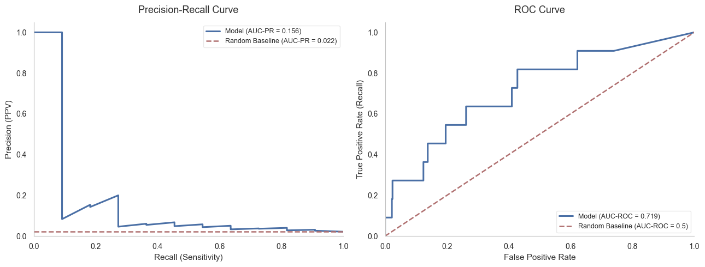
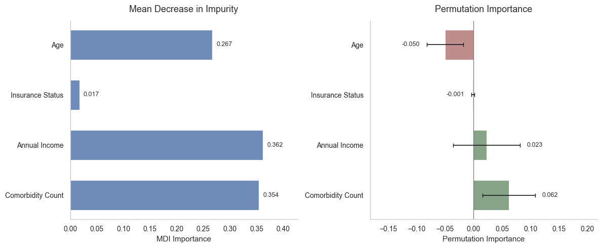
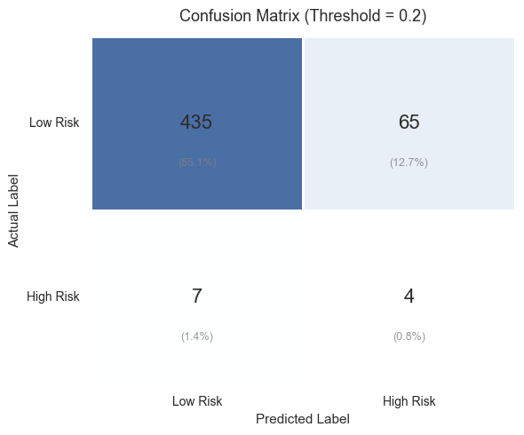

A model that flags which patients are at financial risk in a hospital's revenue cycle, so a billing team can offer support early rather than chase an unpaid bill later. Built and validated on synthetic EHR data.
scikit-learn · Random Forest · Imbalanced learning · Permutation importance · Synthetic EHR (Synthea)

Hospitals carry a lot of unpaid patient bills. If you can flag which patients are likely to end up in financial difficulty, a billing team can step in early with a payment plan or support, instead of chasing a debt months later. This is a ranking problem: surface the high-risk group at the top. I built it on synthetic EHR data from Synthea, so it is a working demonstration of the pipeline rather than a deployed tool.
The classifier is a Random Forest, trained with class weighting because the high-risk group is rare, and evaluated with stratified cross-validation so the rare class is represented in every fold. The cover shows the precision-recall and ROC curves, which matter more than raw accuracy when the positive class is small.
Reading the model with both impurity-based and permutation importance, comorbidity burden came out as the most reliable driver, ahead of features that are often assumed to matter. The useful takeaway is that routine clinical data already carries most of the signal, so a scoring tool can run on data a hospital already holds.

Figure 1. Feature importance by impurity and by permutation. Comorbidity burden leads on both, which is the more trustworthy signal.
Ranked by predicted risk, the model identifies the high-risk group far better than the baseline, a roughly 9.4-fold lift at the top of the ranking. The confusion matrix shows where it still confuses the two groups, which is the cost a billing team would weigh against the saving.

Figure 2. Confusion matrix. It makes the trade-off explicit: how many genuinely at-risk patients are caught against how many are flagged unnecessarily.
The data are synthetic, so this is a demonstration of the modelling and evaluation rather than a validated clinical or financial tool. The full pipeline, from data generation to feature importance, is in the repository.